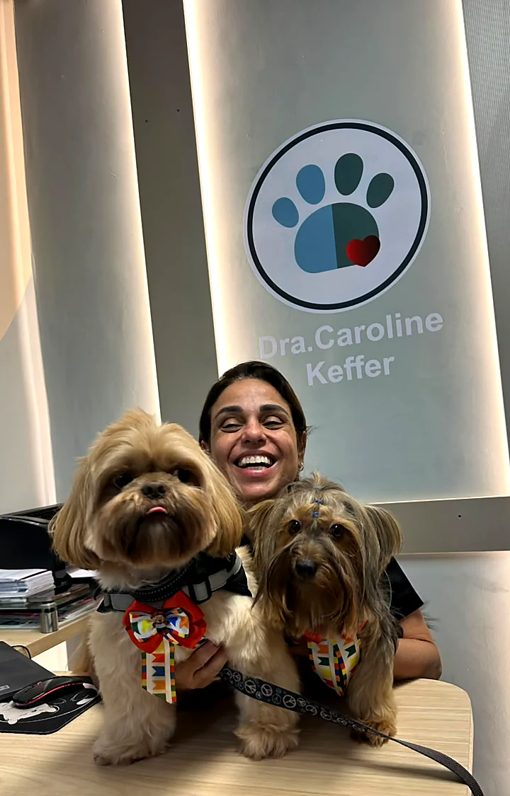

Banho e tosa
O que muda quando o banho é dentro da clínica.
Em pet shop, o banho termina na toalha. Aqui, se aparecer algo no caminho, ele tem para onde ir.

O Lucas vê a pele inteira
Quem dá o banho olha o corpo todo do seu pet, de perto, com calma.

Uma vermelhidão, uma pulga, um nódulo
Ou um ouvido inflamado. Nada fica para depois.

A veterinária olha no mesmo dia
E você sai sabendo o que era, sem voltar outra hora.
Produto indicado pela dermatologia
Manejo calmo para pet ansioso
Cão e gato